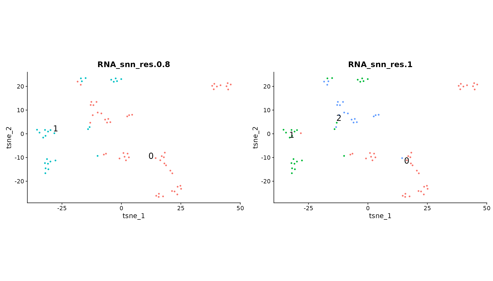
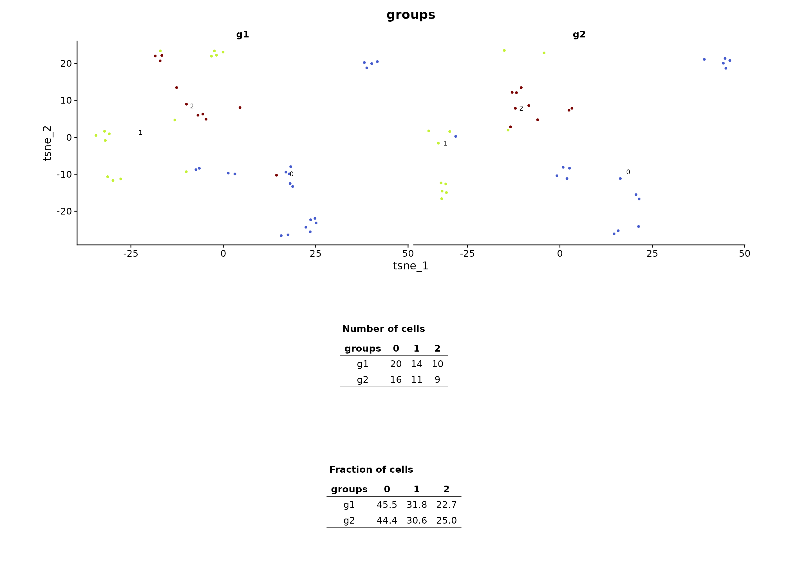

library(schelp)
#> Loading required package: Seurat
#> Loading required package: SeuratObject
#> Loading required package: sp
#> 'SeuratObject' was built under R 4.4.0 but the current version is
#> 4.4.1; it is recomended that you reinstall 'SeuratObject' as the ABI
#> for R may have changed
#>
#> Attaching package: 'SeuratObject'
#> The following objects are masked from 'package:base':
#>
#> intersect, t
pbmc_small <- NULLLoad data
We will use the pbmc_small dataset provided by
SeuratObject.
data("pbmc_small")
pbmc_small
#> An object of class Seurat
#> 230 features across 80 samples within 1 assay
#> Active assay: RNA (230 features, 20 variable features)
#> 3 layers present: counts, data, scale.data
#> 2 dimensional reductions calculated: pca, tsnePlot different clustering resolutions
Sometimes, clustering is performed at different resolutions. Here we
proved an helper function to show different resolutions in one image:
plot_reduction_res()
plot_reduction_res(pbmc_small, reduction = "tsne", column_pattern = "RNA_snn_res", axis_prefix = "tsne_")
Both the reduction to use and the column to use can be set, as in previous example.
Plot splitted clusters
Another function that is part of my analysis process is
plot_splitted_clusters(), which is similar to
plot_splitted_dimplots(). I use it to evaluate whether
clusters are homogeneous and were are they in the UMAP (in particular in
UMAPs with high number of clusters that are difficult to
distinuish),
plot_splitted_clusters(pbmc_small, reduction = "tsne", group_by = "RNA_snn_res.1",
axis_prefix = "tsne_", heights = c(3, 2))I use it also once the clusters have been annotated, providing custom colors:
plot_splitted_clusters(pbmc_small, reduction = "tsne", group_by = "RNA_snn_res.1",
axis_prefix = "tsne_", heights = c(3, 2),
cols_vector = c("0" = "orange", "1" = "blue", "2" = "darkgreen"))Plot clusters metadata
Lastly, it is possible to investigate whether a cluster is enriched
for any meta.data column, such as sample, sex, batch etc.
It is an important step in the analysis to understand both if a possible
integration worked well, and if some clusters might be specific of an
experimental condition.
The function I use is plot_clusters_metadata(). For
example, let’s see if clusters are enriched for any group:
plot_clusters_metadata(pbmc_small, reduction = "tsne",
group_by = "RNA_snn_res.1", split_by = "groups",
axis_prefix = "tsne_",
heights = c(2, 1, 1))
Several customization can be made, check out the function documentations for details.